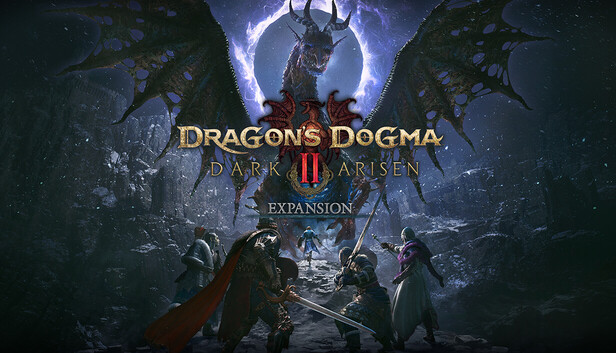
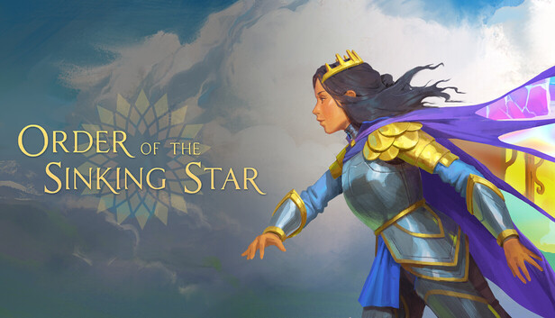
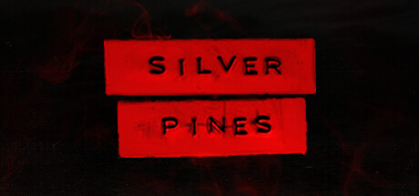
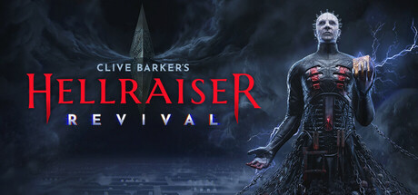
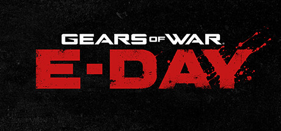
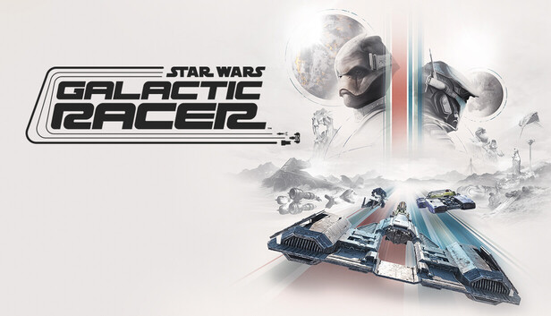
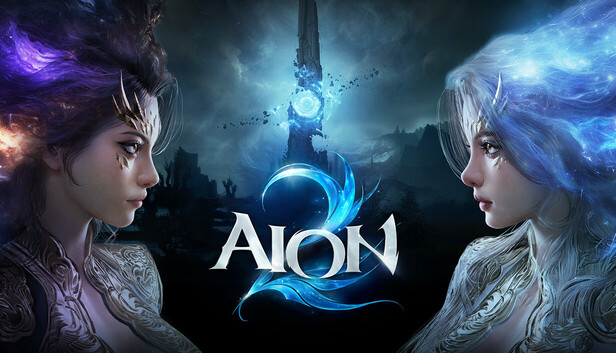
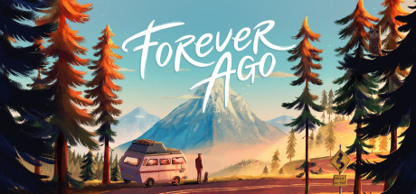
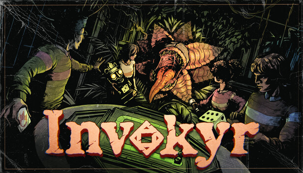
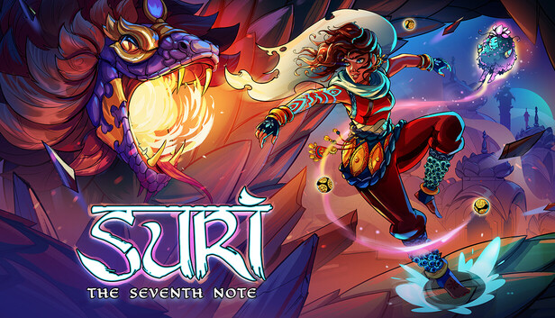

每周新游推荐
2026年10月12日 · 第16期
覆盖 PC (Steam)、主机 (Switch 2 / PS5 / Xbox) 与手游 (iOS / Android) 全平台新游动态
热度指数 0–100
推荐评级 ★★★★★
🆕 新上线
⏳ 即将上线
📌 本期说明：回顾 10月5日 – 10月11日 上线的新游（PC/主机 12 款、手游 3 款），并整理 10月13日起 的重点待上线游戏 25 款。评分与口碑数据均来自 Metacritic、OpenCritic、Steam 好评率、TapTap 评分及厂商公开信息，未做主观臆测；中文名以 Steam 简体中文商店页为准，主机/手游独占作品采用官方或通行中文译名。
🖥️ PC / 主机 — 已上线新游
10月5日 – 10月11日 · 按上线时间倒序

Dragon's Dogma 2: Dark Arisen （龙之信条2：黑暗觉者）
CAPCOM（初代《黑暗觉者》监督木下健人回归）
本体的大型资料片，新增北方冰雪之地「诺根」、遗物鉴定与打造系统、12 个 Lost Rites 试炼地下城，以及新的捏人选项，体量约 20 小时。媒体普遍给出高分：Metacritic PC/PS5 84–89、OpenCritic 86（91% 推荐），IGN 8/10、Push Square 9/10、DualShockers 满分；好评集中在剧情明显强于本体、探索与战斗手感，批评集中在敌人重复、尾盘拖沓与「战利品」词条系统。原作导演伊津野英昭已离职，本作证明系列在新团队手上仍稳。
热度指数
85
推荐评级

Order of the Sinking Star （沉星之序）
Thekla, Inc.（乔纳森·布洛）
《时空幻境》《见证者》作者布洛耗时 10 年、用自研编程语言 Jai 打造的解谜巨作：1000+ 手工谜题分布在中央 Overworld 与东西南北四块规则各异的区域，随进度互相咬合成六个复合区。Metacritic PC 83–86、PS5 83–86、Switch 2 85；Shacknews 满分、GameSpot 8/10、Metro 9/10。Steam 特别好评（约 97%，524 篇），峰值在线 4,634。PS5 白金需完成约 1400 个谜题，官方称 100% 需约 500 小时，被称为「史上最难白金」。国区 98 元，中文文本完整，中文配音约一个月后追加。
热度指数
88
推荐评级

Silver Pines （银松镇）
Wych Elm / Team17
2.5D 生存恐怖银河恶魔城：私家侦探 Red Walker 在已疏散的美国小镇寻找失踪乐手 Eddie Velvet，融合资源管理、战斗、解谜与地图回溯探索。采用转描动画 + 视差滚动营造 2D 平面里的立体纵深，配乐有明显的 Badalamenti 味道。OpenCritic 87–88，Steam 特别好评（约 93%），PS Store 4.92/5。玩家普遍称其为「2D 横版《寂静岭》+《双峰》」，10–14 小时，$30，首发 9 折。争议：手柄/坦克式操作、Boss 战略显消耗、Steam Deck 帧数。
热度指数
76
推荐评级

Clive Barker's Hellraiser: Revival （猛鬼追魂：复苏）
Saber Interactive
《猛鬼追魂》40 年来首部独立游戏：主角艾丹用「创世之匣」闯入迷宫地狱营救女友桑妮，Doug Bradley 回归配音钉子头，剧情由克莱夫·巴克共同撰写。第一人称生存恐怖 + 枪械/念力/地狱锁链，约 9–10 小时，$39.99。评分严重撕裂：Metacritic 69（PS5）/ 75（PC）/ 74（Xbox）、OpenCritic 73，但 Metacritic 用户分 9.1、Steam 压倒性好评（95%，2800+ 篇）。IGN 6/10、Push Square 5/10 vs. TheSixthAxis 9/10。对原作毫不妥协的血腥还原是最大加分项，Boss 战与 bug 是主要扣分项。
热度指数
80
推荐评级
KINGDOM HEARTS Collection [I~III] （王国之心合集 [I~III]）
SQUARE ENIX
「黑暗探求者篇」一次补完：收录 1.5+2.5 ReMIX、HD 2.8 Final Chapter Prologue、III + Re Mind（DLC），合计 8 款游戏 + 3 段影像，三部也可单独购买。Switch 2 版首次真正原生本地运行，取代初代 Switch 的云串流版（云版已于 6 月 9 日停售），并支持存档继承。PS Store 定价 $74.99，用户评分 4.83/5（186 评）。各平台赠送专属键刃（Switch 2「Long Night」／PS5「Midnight Blue」／Xbox「Phantom Green」）。注意：仅《III + Re Mind》支持繁体中文，其余收录作仅日/英。
热度指数
78
推荐评级

Gears of War: E-Day （战争机器：事变日）
The Coalition（支援：People Can Fly）/ Xbox Game Studios
时隔七年的正统续作，回到兽族破土而出的「事变日」，讲述年轻马库斯·菲尼克斯与多姆的起源。UE5 重制，战役五幕约 15–25 小时，支持 4 人在线合作与主机双人分屏，首发加入 XGP / PC Game Pass，标准版 $69.99。Metacritic 87（XSX，51 家媒体）／PC 82–83，OpenCritic 88（74 家，92% 推荐）——系列自 2011 年《战争机器3》以来最高分。IGN 9/10、Pure Xbox 10/10、TechRaptor 9.5，但 GameSpot 7/10、Wccftech 7.4 批评剧情与新开放区域乏味。微软确认不登陆 PS5，是 Xbox 回归主机独占策略的试金石。
热度指数
94
推荐评级

STAR WARS: Galactic Racer （星球大战：银河赛车手）
Fuse Games（前 Criterion 成员 Matt Webster 领衔）/ Secret Mode
帝国陨落后的外环非法联赛：驾驶陆行艇、飞行摩托、 skim speeder 与飞梭赛车，冲撞与击倒被明确鼓励。带 Roguelike 元素的赛事结构 + PvP 对战，战役约 10 小时以内，$59.99。Metacritic 88（PS5）/ 86（Xbox）/ 84（PC），OpenCritic 87 且 96% 评论推荐——是本周口碑最一致的作品；Steam 好评约 81%（Very Positive）。主要批评是后期赛事重复度高。与《事变日》同日发售，构成 2026 年最密集的发售周之一。
热度指数
82
推荐评级

AION 2 （永恒之塔2）
NCsoft
时隔 17 年的正统续作，UE5 打造、支持 DLSS 4.5 / Reflex / FSR，捏脸系统自由度极高。10 月 5 日免费开服当天 Steam 峰值同时在线 397,905 人，官方随后宣布破 40 万，冲上全球热销榜第一、在线榜第三（仅次于 CS2 与 Dota 2）。但口碑两极：Steam 好评率仅约 65–68%（褒贬不一），国区约 71%。争议集中在会员资格绑定单服不可转移、能量系统被指「Pay to Progress」、排队与闪退（0xE00000013）。国际服暂不支持中文，国服未定，入坑需加速器门槛。
热度指数
90
推荐评级

Forever Ago
Third Shift / Annapurna Interactive
Annapurna 出品的叙事向公路片：70 多岁的阿尔弗雷德在相伴 52 年的妻子奥黛丽离世后，带着她留下的手绘日记与一台拍立得，开着旧露营车一路向北。玩法以探索、阅读与摄影为主——拍下的照片会真正填进日记，构成叙事的一部分。流程约 3–5 小时，无战斗。媒体评价中上：肯定其克制的悲伤书写、对老年处境的认真刻画与配色美术；批评在于互动单薄、走位判定别扭、节奏对部分玩家过慢。适合《看火人》《奇异人生》受众。
热度指数
62
推荐评级

Invokyr （勇敢者之试炼）
Ludogram
最多 6 人合作的桌游主题恐怖游戏：你们掷出 70 年代被诅咒的桌游骰子，在废弃宅邸中搜寻特殊骰子，每掷一次都会召唤怪物、陷阱与诅咒，直到击败「游戏大师」。玩法介于合作生存与 Roguelite 之间，随骰面推进局势。开发者 Ludogram 表示抢先体验期约一年，当前内容仍在扩充，正式版前不建议期待完整流程。同类参考：《Demonologist》《Labyrinthine》一系的轻量联机恐怖。
热度指数
55
推荐评级
Hell is Us （地狱即我们）
Rogue Factor / Nacon
2025 年 9 月首发的半开放世界动作冒险，刻意不设任务指引、地图标记与问号：玩家需要靠 NPC 对话与现场线索自己推理去哪、做什么，探索驱动的叙事在去年就收获了一批坚定拥趸，也被「迷路劝退」的另一批玩家批评。战斗为近战 + 无人机辅助，氛围与美术是主要加分项。本次 Switch 2 版于 10 月 8 日上线，是掌机端首次可玩。对没玩过的玩家，这是一次低门槛补课的机会。
热度指数
64
推荐评级
The Crew Motorfest （飙酷车神：轰鸣盛典）
Ubisoft Ivory Tower
以夏威夷欧胡岛为舞台的开放世界竞速，主打「主题赛事（Playlist）」串联的持续运营，第 4 年通行证已于 10 月 7 日上线。本次 Switch 2 版于 10 月 8 日发售，让任天堂玩家首次在本地硬件上跑完整的 Motorfest。内容量对得起体量，但育碧式的持续运营与内购节奏依旧是老问题；适合想要一台机器上随时来几局的休闲竞速玩家。
热度指数
60
推荐评级
📱 手游 — 已上线新游
10月5日 – 10月11日 · iOS / Android

霓虹深渊2
Veewo Games（联合 Kepler Ghost 发行）
经典动作 Roguelike 续作 1.0 正式版：10 月 8 日同步登陆 Steam、PS5、Xbox Series、微软商店、Switch 与移动端，Xbox 首发加入 XGP，系列首次登陆 PS5 与 Switch。核心仍是「道具无限叠加」的 Build 狂欢，新增创新武器系统、信仰系统与宠物「哈基宝」收集进化，1.0 加入最终 Boss「虚荣之神·忒亚」。支持简体中文界面/字幕/完整音频，最多 4 人联机。Steam 国区 58 元、首发 46.4 元；手游为免费下载 + 付费解锁买断制，与 PC 内容同步。TapTap 评分 7.7–8.2，关注 16 万+。上线初期争议集中在移动端摇杆手感与断连手柄后键位不复位的 bug，制作组已公开回应并在优化。
热度指数
84
推荐评级

九万亩
两英里科技（成都）
做了近十年、几度中断的独立项目：像素国风沙盘 SLG，从一亩地起步，攻占荒地、建城、研发科技、招募军队。首创「回合自走棋」战斗——在方格棋盘上排兵布阵，配合枪/盾/弓/骑/攻城器械五兵种循环克制（克制方减伤 30%、被克方增伤 30%），比传统 SLG 的纯数值推演更有操作感。采用短赛季机制，每局地图、兵种与政策随机，降低长线养成负担。TapTap 评分 8.5–8.7，关注 5.1 万。制作人「牛奶瓶」此前因资金问题两度停摆，本次上线被社区视为「有灵魂的作品」。
热度指数
62
推荐评级

深鸢
上海触炘网络科技
小团队首作，二次元美少女收集养成 + 横版 2D 即时战斗：大灾难后陆地被海洋吞没，人类栖居在数百座「航行都市」上靠打捞旧世界遗物维生，你是指挥特型武装舰「英赫丽特」号穿越死亡海的唯一男性领航员。玩法为剧情推图 + 海域探索 + 异步排名竞技，无实时强 PVP，定位偏副游。内购按行业常规 3–4 折定价。TapTap 评分 6.5 偏低，社区反馈集中在角色养成资源卡得紧、UI 与加载问题；iOS 版因审核进度未同步上线。建议观望后续优化再决定是否长期投入。
热度指数
48
推荐评级
⏳ 下周及近期 — 重点待上线
10月13日 起 · PC / 主机 20 款 + 手游 5 款 · 全量展开
PC / 主机

Total War: SHOGUN 2 — Complete Edition （全面战争：幕府将军2 完全版）
Creative Assembly / MATABOO
2011 年被评为系列巅峰的日本战国策略名作，以完整版形式回归 Steam，一次性收录全部 DLC，无需分批购买。《幕府将军2》的战场手感与外交/家臣系统至今仍被老玩家奉为标杆，也是《全面战争》系列中文化最完整的一作之一。适合想补课 CA 黄金期策略设计、或想在低配机器上跑大规模会战的玩家。
热度指数
72

Planet Zoo 2 （动物园之星2）
Frontier Developments
继《过山车之星》《动物园之星》之后 Frontier 的又一经营模拟续作：设计栖息地、照顾动物个体、管理游客满意度与园区经济。前作以极高的建造自由度和「每只动物都有独立性格/基因」的深度著称，也被诟病管理操作繁琐。续作预告片在本月新游中讨论度居前（约 72.8 万播放），核心看点在于是否优化了建造操作与员工/路径管理的学习曲线。
热度指数
80

Valor Mortis （不朽遗志）
One More Level（《Ghostrunner》开发商）
《Ghostrunner》团队转向的第一人称黑暗动作游戏：以近战格斗为核心的硬核战斗，场景设定在拿破仑式的架空黑暗奇幻战场。One More Level 的招牌是一击必杀 + 高速位移的爽快手感，本作把这套设计从赛博朋克搬到冷兵器战场，强调格挡、处决与连段节奏。官方定位偏硬核，预计会延续《Ghostrunner》的高难度曲线，值得动作玩家重点关注。
热度指数
78

Warhammer 40,000: Boltgun 2 （战锤40K：爆弹枪2）
Auroch Digital
复古风（boomer shooter）战锤 40K 射击续作：延续 90 年代 DOOM/Quake 式的高速推进、无掩体、无回血设计，把星际战士的爆弹枪与链锯剑手感做到极致。前作凭借纯粹的爽快度与对 40K 设定的还原成为 2023 年黑马。续作扩大关卡规模与敌人种类，Switch 2 版稍后推出。适合想要「不用动脑、只管开火」的纯正老派 FPS 玩家。
热度指数
74

Castlevania: Belmont's Curse （恶魔城：贝尔蒙特的诅咒）
KONAMI / Evil Empire
系列 40 周年新作，由《Dead Cells》开发商 Evil Empire 的班底（Motion Twin 体系）与 KONAMI 联合打造，回归贝尔蒙特一族与吸血鬼猎人题材的横版动作探索。主打鞭子 + 副武器的经典手感与现代化关卡设计，官方已放出免费试玩 Demo。Steam 商店页显示 10 月 14 日解锁，主机/其他平台 15 日。是本月最具情怀分量的作品之一。
热度指数
88

Enshrouded （雾锁王国）
Keen Games
体素建造 + 开放世界生存动作 RPG，自 2024 年 1 月抢先体验以来累计了大量内容更新，本次终于推出 1.0 正式版并同步登陆主机平台。特色是把《Valheim》式的生存建造与《塞尔达》式的滑翔/钩爪探索、以及一套完整的职业天赋树揉在一起，且体素地形允许真正「挖」出来的建筑。正式版同步意味着旧存档与服务器政策会有变化，老 EA 玩家建议先读更新说明再升级长期世界。
热度指数
84

Tenebris Somnia
Andrés Borghi / Saibot Studios
来自阿根廷老牌独立恐怖团队（《Lamentum》作者 Andrés Borghi）的像素/实拍混合风心理恐怖游戏。夹在《恶魔城》与《使命召唤》两款大作之间，规模更小、更聚焦，适合在本月大作间隙找一款氛围向恐怖小品。此前已有 Demo 可供试玩。
热度指数
54

We Were Here Tomorrow （我们曾到此：明日遗踪）
Total Mayhem Games
双人非对称合作解谜系列新作：两名玩家身处不同空间、只能通过对讲机交流，必须靠语言描述各自看到的信息才能解开谜题——本质上是「沟通能力的压力测试」。系列一贯的优点是几乎没有操作门槛、全靠默契，非常适合情侣/固定搭子。本作把舞台搬到更现代的场景，官方称会带来新的通讯机制。
热度指数
63

FINAL FANTASY RESONANCE
SQUARE ENIX / LANCARSE
系列首部 HD-2D 正统作品：以《最终幻想：勇气启示录 幻影战争》的第一个故事弧为蓝本重构的回合制 RPG，像素角色 + 3D 场景的 HD-2D 表现，配合 SE 传统的 ATB/回合战斗。官方已推出「第一章抢先体验版」。对本月想玩正统 JRPG 的玩家来说，这是《王国之心合集》之后 SE 在 10 月的第二记重拳。注意：Switch 与 Switch 2 支持情况请以各自商店页为准。
热度指数
86
ONE PIECE 海洋盛宴
Kairosoft（开罗游戏）
开罗游戏与《海贼王》的联动经营模拟：在这片大海上经营自己的船与海上餐厅，招揽客人、研发菜谱、组建船员，是开罗最擅长的像素「慢节奏放置经营」模板。对开罗老玩家来说是熟悉的配方；对《海贼王》粉丝则是难得的正版授权小品。Steam 商店页显示 10 月 22 日解锁，移动端同期。
热度指数
66

Call of Duty: Modern Warfare 4 （使命召唤：现代战争4）
Infinity Ward（联合 Beenox / Raven / Treyarch / Sledgehammer / High Moon / Activision Shanghai）
Infinity Ward 主导的新一作《现代战争》，包含全新故事战役、多人对战与 DMZ 模式，首次同步登陆 Switch 2。预告片播放量在本月新游中断层第一（约 9600 万），基本锁定 10 月最大规模的多人首发。注意：Steam 页面显示 10 月 22 日解锁，主机/其他渠道为 23 日，且各版本的预载时间、战役解锁与容量需求会按版本不同，请以所在商店页为准。
热度指数
96

Nintendo Switch Sports Resort
Nintendo
Wii Sports Resort 的精神续作，为 Switch 2 的体感手柄量身打造：在一座可自由探索的度假岛屿上展开多项运动与多人活动，官方定位「派对 + 轻竞技」。预告片约 100 万播放，是任天堂在《马力欧卡丁车》之外补齐秋季合家欢阵容的一环。想要全家/朋友同乐的合家欢运动游戏，这是本月唯一的任天堂第一方选择。
热度指数
85

Emberville （余烬之镇）
Cygnus Cross（与主播 CohhCarnage 共同构思）
把 《暗黑破坏神》式地下城刷宝与 《星露谷物语》式小镇经营缝在一起的独立项目：一边下副本攒装备，一边回镇上搞建设与社交。概念在公布阶段就因「两种成瘾循环的叠加」引发大量讨论，DEMO 已可试玩。抢先体验阶段内容完整度与终局设计仍有不确定性，建议先看首周口碑再决定是否入坑。
热度指数
70

Phantom Blade Zero （影之刃零）
S-GAME（灵游坊）
国产「功夫朋克」黑暗奇幻动作 RPG，凭借极高速的连段与演出在国内外展会圈粉多年，预告片播放量约 580 万，是本月最受关注的国产单机。Steam 商店页显示 10 月 28 日解锁，官方口径为 10 月 29 日。作为 PC + PS5 双平台的国产 3A 级尝试，性能表现（尤其是 PC 优化）是发售前后最值得盯的点，建议等首轮独立性能实测再决定版本。
热度指数
92

Metro 2033 Redux （地铁2033 重制版）
4A Games / Deep Silver
4A Games 与 Deep Silver 在 10 月 29 日推出《地铁2033 Redux》与《地铁：离乡 Redux》的 PS5 / Xbox Series 重制版，均改编自德米特里·格鲁霍夫斯基的小说。地铁系列以压抑的隧道氛围、资源管理式枪械手感与道德点系统著称，本次重制让主机玩家以更高帧率与分辨率重补这部起点之作。
热度指数
68

The Wolf Among Us Remastered （我们身边的狼 重制版）
Telltale Games
Telltale 招牌之作《我们身边的狼》（改编自《Fables》漫画）的重制版，收录第一季全部五章，带来画面改进与新的黑白模式。以「童话人物在现代纽约的黑色侦探故事」为设定，选择驱动叙事的巅峰之一。对没玩过原版的玩家，这是 10 月底最值得补的叙事向作品。
热度指数
71

SURI: The Seventh Note
Tathvamasi Studios
以印度神话/哲学为底色的动作冒险作品，美术风格在本月新作中辨识度较高。此前已放出免费 Demo。作为 10 月收尾的小体量作品，适合在大作间隙体验差异化题材。
热度指数
52

The Legend of Zelda: Ocarina of Time （塞尔达传说：时之笛）· 重制
Nintendo
被无数玩家奉为「史上最佳」的 1998 年 N64 经典，以重制形式登陆 Switch 2。海拉尔大陆、时之笛、七年之隔与「Z-targeting」锁定系统，几乎定义了整个 3D 动作冒险的语汇。对老玩家是情怀补课，对新玩家是理解整个塞尔达系列的起点。
热度指数
95

Grand Theft Auto VI （侠盗猎车手6）
Rockstar Games
本年度毫无争议的最大事件：回归罪恶都市，双主角设定。整个 11 月几乎没有其他发行商敢正面竞争，多数厂商已主动避开该档期。无 Steam 页面（Rockstar 自家发行），请以官方站点与主机商店为准。
热度指数
100
手游

秩序：新曙光
外层空间工作室 / 北京萌动世纪
做了四年的国产科幻殖民地模拟经营：扮演传奇舰长在沙漠行星「新泰拉」从零建据点，采矿、造屋、架防御、抗沙暴与瘟疫、打退夜袭；雇员各有独立背景/情绪/属性，科技树数百项含隐藏分支，还可自主设计舰船、组建舰队并手动指挥护盾与导弹。开发日志明言灵感来自《环世界》《远行星号》《群星》，想把「种田 + 星辰大海」塞进一局里。Steam 88 元 / TapTap 38 元，10 月 14 日 14:00 双端 EA 发售，创意工坊已启用。TapTap 评分 8.5，预约 28 万。注意是 EA 首发，内容完整度仍在爬坡。
热度指数
71

剑侠世界4：无限
西山居
西山居 30 周年、剑侠世界系列的收官之作：延续家族群战、门派成长、自由交易与社交恩怨等经典体验，打造约 1 亿平方米的无缝大江湖，支持野外首领、据点争夺、城战攻防等大规模团战，同时保留自由捏脸、点对点自由交易等轻度玩法。全网预约已超 900 万（官方预约站接近 940 万）。在 MMO 整体进入存量竞争的当下，这是武侠 MMO 能否重新聚拢人气的一次关键检验。
热度指数
83

绿梦：时空之声
绿梦工作室（上海竹子绿梦网络科技）
大厂出身团队做的 3D 二次元横版动作冒险，细分品类是少见的「类银河恶魔城」二游：低视角横版构图，角色分攻坚/爆发/续航三类定位，可灵活切换、打断怪物霸体，支持搓招连段与双人协同技；关卡从轻量解谜到深度探索、隐藏内容逐步解锁。制作组此前已宣布卡池改革：上调 S 级概率、降低保底、承诺 UP 池不歪。TapTap 评分 9.0–9.1，预约 102 万，10 月 15 日 10:00 安卓/iOS/PC 三端公测。
热度指数
87

星途天城
诗悦体系（广州春芒网络科技）
蒸汽神话策略 RPG：19 世纪工业幻想背景，蒸汽朋克 + 神秘学 + 多文明神话，玩家作为异世界「神明」收集养成可三阶降神的星灵——角色会随养成从人到神，立绘、特效与战斗姿态分三阶段全面升级。主打「肉眼可见的成长」，同时强调 5 大元素/职业压制、DIY 主角与「策略拉满、养成减负」。TapTap 评分 8.2–8.3，一度冲上预约榜第 1，10 月 22 日全平台公测，首月免费领 300 抽。
热度指数
75

失落城堡2
雷霆游戏（原班人马开发）
一代由三个大学生零资金做出、Steam 卖爆后手游累计数千万下载；二代由原班人马开发，延续横版 Roguelike 动作冒险核心，画面、打击感与联机体验全面升级，舞台搬到边境的黑城堡。与《魔法工艺》双向联动，手游联动版本随公测同期上线。TapTap 评分 8.3，预约已突破 50 万（80 万档位「焕新雷霆之翼」仍在解锁中），10 月 22 日全平台公测，iOS/安卓数据互通可跨设备续玩。
热度指数
79
🏆 下半年最值得期待 TOP10
按热度指数排序 · 仅列尚未发售作品 · 点击游戏名可跳转对应商店页